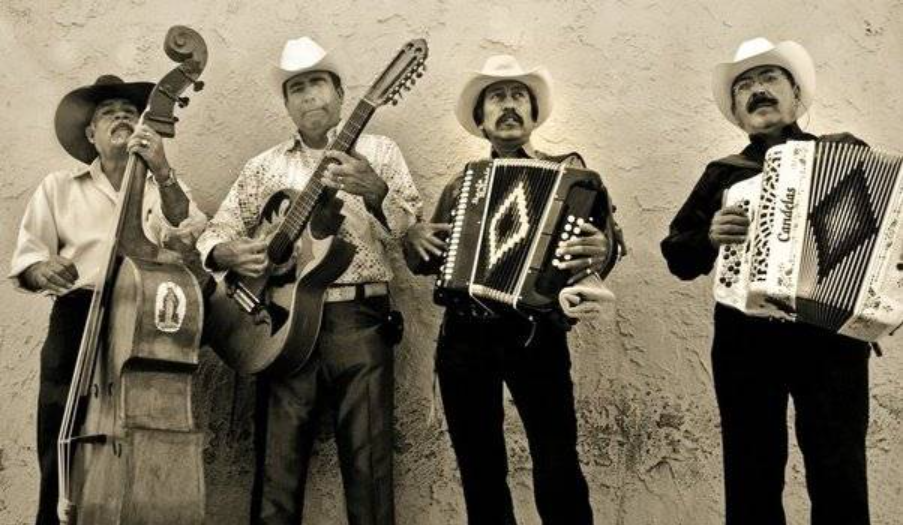
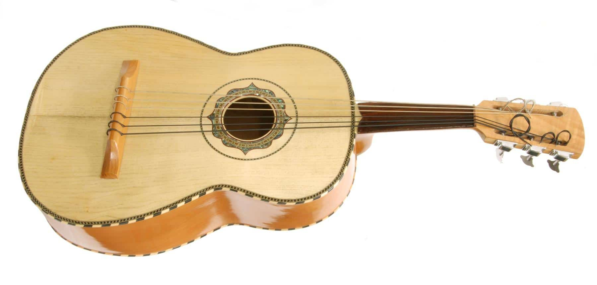

Géneros musicales de México
- Mariachi
- Corridos
- Norteña
- Banda Sinaloense
- Ranchera
Norteña
Haz click aquí para más información sobre los géneros musicales de México
Instrumentos musicales de México
| Instrumento | Tipo |
|---|---|
| Guitarrón mexicano | Cuerda |
| Bajo sexto | Cuerda |
| Pandero jarocho | Percusión |
| Huéhuetl | Percusión |
| Chapareque | Viento/Cuerda |
| Arpa jarocha | Viento |
Guitarrón mexicano
Huéhuetl

Haz click aquí para más información sobre los instrumentos musicales de México (1)
Haz click aquí para más información sobre los instrumentos musicales de México (2)